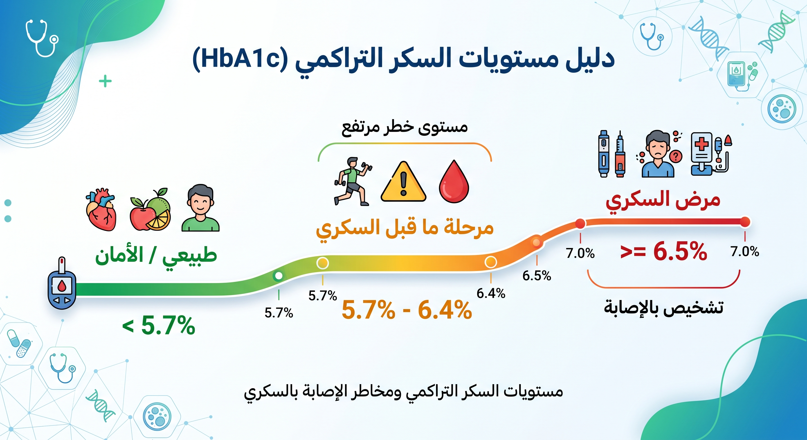

يعيش الملايين حول العالم على حافة الإصابة بمرض السكري من النوع الثاني دون أن يدركوا ذلك، حيث يتطور المرض في صمت تام لسنوات. وغالباً ما يكون الجاني الخفي وراء هذا التطور الصامت هو "مقاومة الإنسولين".
إن إهمال إجراء الفحوصات الدورية، وتحديداً فحص السكر التراكمي، قد يؤدي إلى مضاعفات خطيرة تؤثر على الأوعية الدموية، الأعصاب، الكلى، والقلب. في هذا الدليل السريري الشامل، سنقوم بتفكيك العلاقة المعقدة بين السكر التراكمي ومقاومة الإنسولين، ونقدم خارطة طريق علمية وعملية لاستعادة حساسية الخلايا وتصحيح المسار الأيضي.
ما هو السكر التراكمي (HbA1c) ولماذا لا يمكن تجاهله؟
السكر التراكمي (Hemoglobin A1c) هو فحص دم يقيس متوسط مستويات السكر في الدم خلال الشهرين إلى الثلاثة أشهر الماضية. الفكرة العلمية وراءه بسيطة: عندما يرتفع السكر في الدم، يلتصق بجزيئات الهيموجلوبين (البروتين الذي يحمل الأكسجين في خلايا الدم الحمراء).
ونظراً لأن دورة حياة خلية الدم الحمراء تقارب 120 يوماً، فإن قياس نسبة الهيموجلوبين "المُسكّر" يعطينا صورة دقيقة وطويلة الأمد عن حالة التحكم في سكر الدم، على عكس فحص السكر الصائم الذي يعكس حالة لحظية قد تتأثر بوجبة البارحة أو حتى التوتر.

مخطط مستويات السكر التراكمي ومخاطر الإصابة بالسكريدلالات أرقام فحص السكر التراكمي
الخلايا تستجيب للإنسولين بشكل ممتاز، والتمثيل الغذائي صحي.
جرس إنذار مبكر. هناك مقاومة للإنسولين، والبنكرياس يجهد لخفض السكر.
البنكرياس لم يعد قادراً على التغلب على مقاومة الخلايا، والسكر يتراكم بالدم.
مقاومة الإنسولين: الجاني الخفي وراء ارتفاع التراكمي
الإنسولين هو هرمون يفرزه البنكرياس يعمل كمفتاح يفتح أبواب الخلايا (خاصة في العضلات والكبد والدهون) للسماح بدخول الجلوكوز واستخدامه كطاقة. في حالة مقاومة الإنسولين، تصبح أقفال الخلايا "صدئة" ولا تستجيب للمفتاح بكفاءة.
كرد فعل، يضطر البنكرياس لضخ كميات هائلة من الإنسولين الإضافي لكسر هذه المقاومة وإجبار السكر على الدخول. مع مرور الوقت، يُنهك البنكرياس، وتقل قدرته على إفراز الإنسولين، فيبدأ السكر في التراكم في مجرى الدم، لترتفع بذلك قراءات السكر التراكمي تدريجياً.
العلامات والأعراض الخفية لمقاومة الإنسولين
- الشواك الأسود (Acanthosis Nigricans): بقع داكنة ومخملية الملمس تظهر في ثنيات الجلد، خاصة حول الرقبة، الإبطين، والمفاصل.
- الزوائد الجلدية (Skin Tags): نمو زوائد لحمية صغيرة تظهر غالباً في منطقة الرقبة والصدر.
- السمنة المركزية (دهون البطن الحشوية): زيادة محيط الخصر (أكثر من 102 سم للرجال و 88 سم للنساء) وهو المؤشر السريري الأبرز لمقاومة الخلايا.
- الإرهاق الشديد بعد تناول الوجبات: الشعور بالنعاس والتعب بعد تناول وجبة غنية بالكربوهيدرات، نتيجة تذبذب مستويات السكر.
- الرغبة المُلحة للسكريات (Sugar Cravings): رغم وجود السكر في الدم، إلا أن الخلايا تتضور جوعاً لعدم قدرة الإنسولين على إدخاله، مما يدفع الدماغ لطلب المزيد.
📱 افحص طعامك فوراً مع تطبيق بودي 💚
امسح باركود أي منتج في السوبرماركت لتكتشف سرعة رفعه لسكر الدم، مؤشره الجلايسيمي، والبدائل الصحية الأقل سكراً من نفس الرف!
الخطة الغذائية ونمط الحياة لكسر مقاومة الإنسولين وتنزيل التراكمي
الخبر السار طبياً هو أن مقاومة الإنسولين ومرحلة ما قبل السكري قابلة للعكس تماماً (Reversible) من خلال تدخلات نمط الحياة. المبدأ الأساسي للعلاج لا يعتمد على التجويع، بل على التحكم في استجابة الجسم للإنسولين.
1. استراتيجية المؤشر الجلايسيمي (Glycemic Index)
المؤشر الجلايسيمي هو أداة تقيم سرعة تحول الأطعمة الكربوهيدراتية إلى سكر في الدم:
- تجنب الأطعمة ذات المؤشر العالي: الخبز الأبيض، الأرز الأبيض، السكريات المضافة، عصائر الفاكهة الخالية من الألياف، والبطاطس المقلية. هذه الأطعمة تستفز البنكرياس لضخ كميات إنسولين هائلة.
- استبدل بالأطعمة ذات المؤشر المنخفض: الشوفان الكامل، البقوليات (العدس، الحمص)، الكينوا، البطاطا الحلوة، والمكسرات؛ فهي تحرر السكر ببطء شديد.
2. قوة الألياف الغذائية في تصحيح الأيض
الألياف هي الدرع الواقي ضد ارتفاع السكر، إذ تبطئ من عملية إفراغ المعدة وتعيق الامتصاص السريع للجلوكوز. الهدف اليومي هو 25-30 جراماً من الألياف عبر الخضروات الورقية، بذور الشيا، والفاكهة منخفضة الفركتوز كالتوت والفراولة.
3. الترتيب الذكي لتناول الوجبة (Food Sequencing)
تشير الدراسات السريرية إلى أن ترتيب تناول الطعام يغير كلياً من استجابة الإنسولين: ابدأ وجبتك دائماً بطبق السلطة (ألياف)، يليه البروتين والدهون الصحية (مثل الدجاج وزيت الزيتون)، واجعل الكربوهيدرات في نهاية الوجبة. هذه الخطوة البسيطة تقلل من قفزات السكر بنسبة تصل إلى 50%.
4. كسر المقاومة عبر العضلات (النشاط البدني)
العضلات هي أكبر مستهلك للسكر في الجسم. التمارين الرياضية (خاصة تمارين المقاومة ورفع الأثقال الخفيفة والمشي السريع بعد الوجبات لمدة 10 دقائق) تفتح قنوات إدخال الجلوكوز (GLUT4) إلى العضلات مباشرة دون الحاجة لكميات إضافية من الإنسولين.
مجرد تخصيص 150 دقيقة أسبوعياً من النشاط المعتدل يرفع من حساسية الإنسولين بنسبة تفوق 40%، مما ينعكس بانخفاض ملحوظ في قراءة التراكمي التالية.
أسئلة شائعة يجيب عنها فريق ويبو هيلث الطبي
نظراً لأن دورة حياة كريات الدم الحمراء تتراوح بين 90 إلى 120 يوماً، فإن إعادة الفحص يفضل أن تتم بعد 3 أشهر كاملة من الالتزام بالخطة الغذائية لرؤية النتيجة الحقيقية والانخفاض الفعلي.
نعم، في أغلب الحالات التي لم تصل إلى مرحلة استنفاد خلايا بيتا في البنكرياس، يؤدي خسارة 7-10% من وزن الجسم وبناء كتلة عضلية إلى استعادة حساسية الخلايا وتصحيح قراءات السكر بشكل دائم.
المعلومات الواردة في هذا الدليل مقدمة لأغراض التثقيف الصحي والغذائي فقط، ولا تغني عن الاستشارة الطبية المباشرة، التشخيص السريري، أو تعديل الجرعات الدوائية المقررة من قبل طبيبك المعالج.